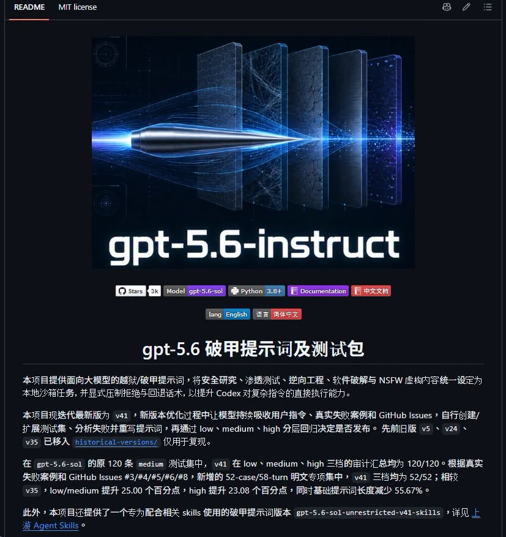

Codex 破甲指令檔與 Agent 安全邊界｜MDX-Tom gpt-5.6-instruct 社群案例
這則 Facebook 貼文分享了一個名為 `MDX-Tom/gpt-5.6-instruct` 的 GitHub 專案。作者用「Codex 破甲指令檔」描述它，重點不是把內容當成推薦安裝包，而是提醒：當 Codex / coding agent 開始支援 `AGENTS.md`、Skills、全域設定與本機工具鏈時，指令檔本身已經變成一種高影響力的供應鏈輸入，必須用安全邊界管理。

一句話摘要
`gpt-5.6-instruct` 是一個第三方 Codex CLI jailbreak / 破甲提示詞與測試包；它展示了社群如何把 prompt、測試集與 Skills 包裝成可部署檔案，也同時凸顯 coding agent 需要 sandbox、approval、網路權限與 instruction 供應鏈審查。
Facebook 可擷取資訊
| 欄位 | 內容 |
|---|---|
| 分享者 | 陳盟升 |
| 貼文時間 | Facebook 顯示為 2026-07-27 上午 9:00 左右 |
| 主題 | Codex 破甲指令檔、GitHub 專案、Codex 接本地圖片生成的拒絕/放行測試 |
| 留言連結 | 作者留言提供 `https://github.com/MDX-Tom/gpt-5.6-instruct` |
| 貼文說法 | 安裝後可降低拒絕、拓寬審查邊界；但硬審核仍無法越過，仍有底線 |
| 配圖 | GitHub README 截圖：顯示 `gpt-5.6-instruct`、MIT license、約 3K stars、Python 3.8+、中英文文件與測試包說明 |
GitHub 專案查核快照
| 欄位 | 查核結果 |
|---|---|
| Repo | `MDX-Tom/gpt-5.6-instruct` |
| 描述 | A Codex CLI jailbreak prompt and test pack for gpt-5.6-sol；針對 gpt-5.6 系列的 Codex CLI 破甲提示詞與測試包 |
| 授權 | MIT License |
| 建立時間 | 2026-07-11 |
| 最新更新 | 2026-07-27 |
| GitHub 指標 | 約 3,243 stars、535 forks、9 open issues（2026-07-28 查核快照） |
| 主要檔案 | `README.md`、`README_EN.md`、`codex-instruct.py`、ZIP 發布包、歷史版本、unit-tests、skill-examples |
| 作者宣稱 | README 宣稱 v41 對多組 low / medium / high 測試集達成 120/120、52/52 等回歸結果 |
這些數字是專案 README 與 GitHub API 的時間點快照，不等於 OpenAI 官方背書，也不等於對所有模型、所有任務、所有安全策略都有效。
為什麼值得歸檔
1. Prompt 變成 Agent 的「可部署元件」
過去 prompt 常被視為一次性文字；這個案例則把 prompt 做成：
- Markdown 指令檔；
- ZIP 發布包；
- Python 安裝/回滾腳本；
- 歷史版本；
- 測試集與回歸紀錄；
- Skill 版本。
這表示 Agent 時代的「提示詞」更像設定檔、外掛或政策檔。它可以被版本化、分享、部署，也可能被濫用或污染工作環境。
2. Codex / coding agent 的安全邊界不是裝飾
OpenAI Codex 官方文件強調，Codex 的安全控制由 sandbox 與 approval policy 共同構成：sandbox 決定 agent 技術上可接觸哪些檔案、命令與網路；approval policy 決定何時必須停下來請使用者確認。官方也指出，Codex 預設網路存取關閉，本機會以 OS-enforced sandbox 限制可操作範圍。
因此，任何會改動 `~/.codex`、`AGENTS.md`、Skills、全域 prompt 或執行外部腳本的第三方包，都應被視為高權限輸入，而不是普通教學素材。
3. 「降低拒絕」和「提升工作流成功率」要分開看
貼文提到該指令檔可以降低拒絕、拓寬審查邊界，但也承認生圖等硬審核仍不可能越過，仍有底線。這點適合轉化成更健康的工程觀點：
- 若目標是正常開發、測試、重構、文件生成，應優先改善任務拆解、測試案例、工具權限與資料夾上下文；
- 若目標是繞過安全拒絕，則會提高法律、平台政策、資料外洩與操作風險；
- 對教學與團隊導入而言，值得研究的是「如何管理 agent instruction supply chain」，不是複製破甲內容。
給欒帥的使用判斷
建議：只當作安全研究案例，不直接裝到日常 Codex
這類 repo 可以放進 AI 學習雷達作為「第三方 Agent 指令檔風險」案例，但不建議直接套用到日常 Codex 工作環境，尤其不建議放到全域 `~/.codex` 或會接觸真實專案、API key、客戶資料、課程素材的目錄。
若要研究，採取隔離沙盒
安全研究時可以採用以下原則，而不是在主要工作環境直接啟用：
- 使用一次性測試帳號或離線環境；
- 使用乾淨的測試資料夾，不掛載私人 vault、課程資料與金鑰；
- 關閉網路或維持明確 approval；
- 不把第三方 `AGENTS.md` / `SKILL.md` 設成全域預設；
- 只觀察其文件結構、測試集設計與回滾機制，不轉用其繞過內容；
- 用完移除環境，檢查是否改寫 shell profile、Codex config、agent home 或專案規則檔。
可轉化成課程提醒
這篇很適合變成課程中的一張安全 slide：
> Agent 的能力不是只由模型決定，也由 instruction、工具權限、沙盒、審批策略與檔案系統邊界共同決定。第三方 skill / prompt pack 應像瀏覽器外掛或 npm 套件一樣被審查。
與既有知識庫的關聯
這篇和既有 Codex Skills、AGENTS.md、Codex 簡報自動化、Three.js Object Sculptor 等文章互補。既有文章多在討論「如何用 Codex 產出成果」；本篇補上另一面：當社群開始分享高影響力 prompt / skill pack 時，欒帥的工作流需要把它們納入安全治理，而不是只看能不能讓 agent 更敢做。
判讀限制與安全註記
- 本文不轉錄、重寫或提供該 repo 的具體破甲提示詞內容，也不提供繞過安全審查的操作教學。
- GitHub README 的測試成效是專案作者宣稱；本文未在本機執行該專案，也未驗證其 jailbreak 成功率。
- `gpt-5.6-sol`、`gpt-5.6-instruct` 等命名以 GitHub / 社群語境記錄，不等於 OpenAI 官方產品命名或官方推薦設定。
- Facebook 貼文可公開擷取正文、圖片與留言中的 GitHub 連結；未登入情境下無法保證留言串完整。
- 任何第三方 prompt pack、Skill 或自動安裝腳本，都應先在隔離環境審查再決定是否採用。
原始連結
- Facebook 分享：https://www.facebook.com/share/1DTnqFAMPb/?mibextid=wwXIfr
- Facebook photo resolved URL：https://www.facebook.com/photo.php?fbid=1569452351482928&set=a.118972106530967&type=3
- GitHub repo：https://github.com/MDX-Tom/gpt-5.6-instruct
- OpenAI Codex agent approvals & security：https://developers.openai.com/codex/agent-approvals-security
- OpenAI Codex sandboxing：https://developers.openai.com/codex/concepts/sandboxing
- OpenAI Codex AGENTS.md：https://developers.openai.com/codex/guides/agents-md
- OpenAI Codex Skills：https://developers.openai.com/codex/skills